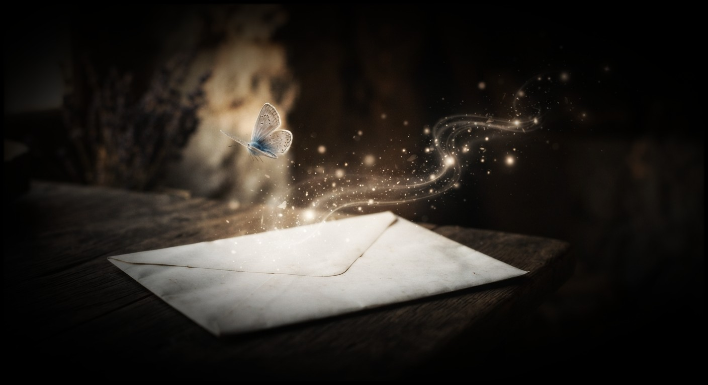

A Letter Across the Years was born from a feeling that survived the passage of time.
Some people become part of our story without ever becoming part of our everyday lives. Years may pass, paths may
separate, and silence may grow between two people, yet certain memories remain quietly alive within the heart.
This poem is about a letter sent to someone from my past, carrying words that had remained unspoken for many years.
I sent them without a demand, without an expectation of a reply, and without asking for anything in return.
The letter carried more than ink. It carried memories, tenderness, fragrance, symbolism, and the echo of a heart that
had never completely forgotten.
The butterfly at the end was not merely an ornament. It was a quiet thread connecting the present to a story that began
long ago.
I do not know what became of my words after they crossed the years.
Perhaps that is not the point.
Sometimes we write because there is something within us that deserves to be spoken, even when we do not know whether the
other person will answer.
This poem is my testament to that moment: the moment I finally released my words into the silence.
Some letters are written to receive an answer.
Some are written simply because the heart has something left to say.
🎵 "When You Are Not With Me" - Grand_Project (Pixabay Music)

I sent you my words,
etched in dark, erasable ink,
wrapped in my fragrance,
enclosed in a pure white envelope.
I did not write them seeking an answer,
or asking you to return the same.
I wrote them because I cared enough
to let my heart speak to you.
So I took a leap of faith
and broke my silence
after such a long winter.
I whispered to you the reason
I broke my silence,
through subtle hints and clues.
In the season now gone,
the Divine began to reawaken
what I had buried
in the darkest corner of my heart.
A sudden surge of signs
began crossing my path,
screaming your name
over and over again.
Your presence has reached every corner of my world since then,
in my studies,
in moments of entertainment,
and even in my work.
I see you everywhere.
Your name,
your birthday,
your zodiac sign
float before me
like neon signs.
I could not simply dismiss them
as fleeting signals,
because deep down,
my heart knows:
I love you,
I love you,
and I love you.
My heart ached:
Are you okay?
I searched for you
in every corner of the digital world.
Then one day,
exhausted from shedding relentless tears,
I was led to your trail,
and that too,
accidentally.
My heart told me
to release
my lingering questions,
my worries,
and my prayers
into your world,
not knowing
whether I still existed
in your memory.
I wove my words
not to jolt you,
but to gently touch your heart,
something like food for thought
for your reasoned mind.
Yet, I kept my mystery intact.
Did you notice
that I have another name,
one known only
within my inner circle,
one you never knew?
Did you ask yourself why?
Did the butterfly
at the end
ring a bell?
This subtle symbol
bridged the history
we once shared.
Every word I chose
carries a deeper meaning,
waiting for you to decipher
me,
and the heart behind my words.
It was my subtle way to whisper:
I still remember you
the way you were.
The reason is simple.
Because I love you.
My aching heart's echo.